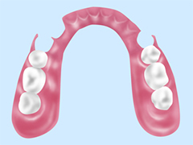

- ホーム
- インプラント・入れ歯
もう一度しっかり咬める歯に～インプラント治療～
インプラント治療については、福岡県春日市の歯医者「かすが歯科」までご相談を。こちらではインプラント治療の特徴と、当院のインプラント治療の症例や治療の流れをご説明します。
インプラント治療とは、失った歯があった顎の骨にインプラント（人工歯根）を埋め込み、その上に人工歯を装着して機能回復を目指す治療法です。インプラントは生体親和性の高いチタンでつくられており、顎の骨としっかり結合。まるで自分の歯のようにしっかり咬めるようになります。
上部の人工歯をセラミック製のものにすれば、見た目も自然でどこを治療したのかわからない仕上がりになります。
インプラント治療の特徴
| 特徴1 | 特徴2 |
|---|---|
| 天然歯に近い咬み心地を再現でき、食べ物を選ばず硬い物もしっかり咬めるようになります。 | セラミック製の人工歯を選べば、見た目も自然でまわりの歯との違和感がありません。 |
| 特徴3 | 特徴4 |
| 失った歯単独での治療になるため、部分入れ歯やブリッジのようにまわりの歯に負担をかけることがありません。 | 咬む刺激が顎の骨に伝わり、骨が痩せにくくなります。 |
当院のインプラント治療について
インプラント治療は外科手術を伴う難しい治療です。治療する部位だけでなく、お口全体をしっかりふまえて治療計画を立案することが大切です。当院では十分な審査・診断の元で慎重に治療計画を検討。患者様にご納得いただいた上でインプラント治療を進めていきます。
歯科用CTを使用した正確な診査と診断
当院では歯科用CTを導入しており、インプラント治療前の診査・診断に役立てています。歯科用CTは顎の骨の厚みや神経・血管の位置まで詳細な立体画像データを確認可能。口腔内写真や歯型模型などと併せて検討することで、正確な治療計画の立案を可能にします。
安心・安全のための設備
| 当院では歯科用CTのほかにも、インプラント治療を安心・安全に行うための設備を積極的に導入し、治療環境を整えています。 |
| サージカルガイド |
|---|
まず歯科用CTで得たデータを元にコンピューター上でシミュレーションソフトを使ってインプラントを埋め込む位置を決定。それに合わせ、インプラントを正しい埋入に導く「サージカルガイド」という器具を製作します。 このサージカルガイドを使ってインプラントの埋入手術を行うことを、「ガイドサージェリー」といいます。 |
| インプランター |
| 顎の骨に穴を開け、インプラント体を埋め込むための機械です。通常の診療で使用するモーターとは異なり、ドリルの回転を細かく制御可能。ムラのないドリリングにより、正確且つスムーズなインプラント埋入を実現します。 |
骨が薄くてもインプラントは可能です
| インプラントを埋め込むには、十分に顎の骨の厚みがあることが大切です。通常、歯周病の進行などによって骨が薄くなっているとインプラント治療は受けられませんが、当院では骨の厚みを確保する治療を行うことで、インプラント治療を可能にします。 |
| 骨造成（GBR） |
|---|
| 骨が薄い部分に人工骨を入れ、骨の再生を促して厚みを確保する治療法です。骨が再生してから、インプラント治療を行います。 |
症例紹介
インプラント手術の方法
インプラント治療では、手術が1回だけの「1回法」と、2回にわたって行う「2回法」があります。当院では患者様のお口まわりをじっくりと診査・診断した上で丁寧に治療を進めていくため、「2回法」を採用しています。
インプラント治療の流れ
- Step1診査・診断/治療計画の立案
- インプラント治療を安心・安全に行うために、診査・診断を行います。歯科用CTや口腔内写真の撮影、歯型模型の製作などによって基礎資料を十分に集めて診査・診断を行い、適切な治療計画を立案します。
- Step2治療前の処置
- お口の中に虫歯や歯周病がある場合、インプラント治療は行えません。先に虫歯・歯周病の治療を行い、お口の環境を整えます。
- Step31次手術（インプラント埋入）
- 局所麻酔を施した上で、インプラントを埋め込む手術を行います。骨造成（上の項へリンク）などが必要なければ、1本につき30～60分程度で終わります。
- Step4結合期間/治癒機関
- インプラントと顎の骨が結合するまで、また歯ぐきの傷が治癒するまで3～6カ月程度待ちます。
- Step5 2次手術
- インプラントと顎の骨が結合したら、歯ぐきを再び開いてインプラント体の頭部を出し、人工歯との接続部分となる「アバットメント」を装着。仮歯を取り付けて、咬み合わせや見た目、発音などをチェックします。
- Step6人工歯の型採り・装着
- 上部構造となる人工歯の型を採り、仮歯から得られた情報を参考にして歯並びや歯の色などをチェックしながら人工歯を製作します。人工歯が完成したら装着し、咬み合わせや色などを確認します。
- Step7定期検診/メンテナンス
- インプラント治療自体が終わっても、それですべて終了ではありません。インプラントをよい状態で維持するためには、定期検診とメンテナンスが重要です。長く快適に使い続けられるよう、定期的にチェックを受けましょう。
義歯（入れ歯）を併用するインプラントオーバーデンチャー
「入れ歯がずれる」「外れやすい」という方におすすめするのが、「インプラントオーバーデンチャー」です。短いインプラントを片顎につき4本埋め込み、その上に総入れ歯を固定する治療法です。
入れ歯のずれやもたつきがなくなり、しっかり咬むことができるようになります。さらにすべての歯にインプラント治療を行うよりも費用を抑えられます。
入れ歯が合わない方には
「入れ歯が合わない」と嘆かれている方は少なくありません。そのような方には、入れ歯と「ミニインプラント」を併用する方法も選択できます。
ミニインプラントとは、文字通り短いインプラントのこと。入れ歯用の短いインプラントを顎の骨に埋め込み、今お使いの入れ歯の裏側にホックのようなものを取り付けて装着します。しっかり咬めるのはもちろん、取り外せるためお手入れがしやすく、お口の中を清潔に保てます。
お口にぴったり合わせることが大切です～入れ歯・義歯～
福岡県春日市の歯医者「かすが歯科」では、患者様一人ひとりのお口にぴったり合った入れ歯のご提供が可能です。
「入れ歯が痛い」「咬めない」「すぐに外れる」「見た目が気になる」……。入れ歯にはこういったマイナスイメージが付き物。しかしこのような問題が生じる入れ歯は、実はお口に合っていないことが考えられます。
当院は患者様が快適に過ごせるよう、必要に応じて入れ歯の調整・修理およびつくり直しを行います。お手入れ方法などもしっかりサポートいたしますので、どうぞお気軽にご相談ください。
当院の入れ歯・義歯
失った歯の機能を回復させる治療には、入れ歯・ブリッジ・インプラントがありますが、その中でも古くから親しまれているのが入れ歯です。入れ歯治療には手術が不要であり、短期間で治療を終えられるといったメリットがあります。
近年では入れ歯の技術が進歩し、多様な入れ歯を製作できるようになりました。当院でもさまざまな入れ歯をご用意していますので、お気軽にご相談ください。
さまざまな入れ歯をご用意しています
当院では保険・自費ともにさまざまな入れ歯をご用意しています。「見た目をよくしたい」「フィット感のよいものにしたい」「外れにくくしたい」など、それぞれのご希望に適した入れ歯をご提案します。まずは現在のお悩みをお聞かせください。
入れ歯メニュー
レジン床入れ歯（保険診療）
もっともオーソドックスなタイプの入れ歯です。床部分がレジン（歯科用プラスチック）でつくられており、厚みがあります。装着時に違和感があるものの、保険適用で比較費用を抑えられる点がメリット。また製作期間が短く、修理も簡単に行えます。
金属床義歯
床部分を金属で製作した入れ歯です。強度があるため床を薄くでき、熱伝導率が高いことで食べ物の温度を感じやすくなります。丈夫で壊れにくい点もメリットです。
ノンクラスプデンチャー

弾力性のある特殊な樹脂で製作した部分入れ歯です。保険診療の部分入れ歯にある金属のバネがなく、見た目が自然な上にまわりの歯に負担をかけないメリットが。またフィット感にも優れています。
シリコンデンチャー
床部分に生体用シリコンを用いた入れ歯です。しっかりフィットし、入れ歯と歯ぐきの間に異物が入るのを防ぎます。力を入れて咬めるのもメリットです。
マグネットデンチャー
根管（こんかん）治療で神経を取り除いた歯根が残っている場合、歯根の上に金属のキャップを取り付け、入れ歯側には磁石を埋め込んで、強力な磁力で固定する入れ歯です。入れ歯のずれやもたつきがなく、よく咬めるようになります。